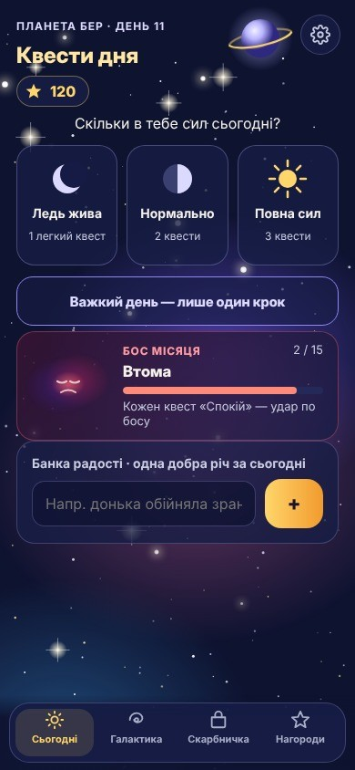
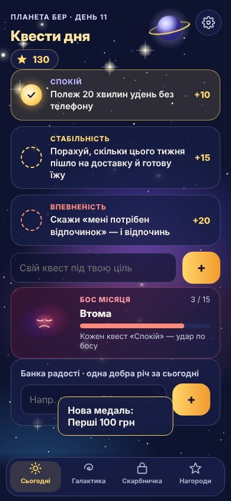
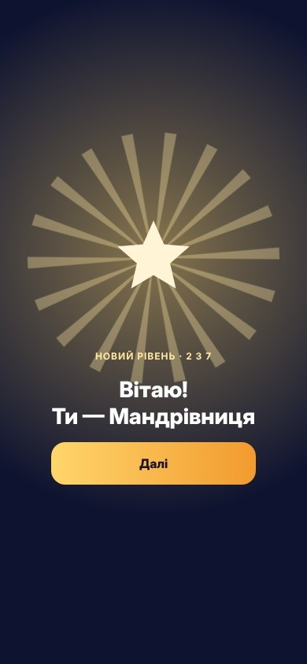
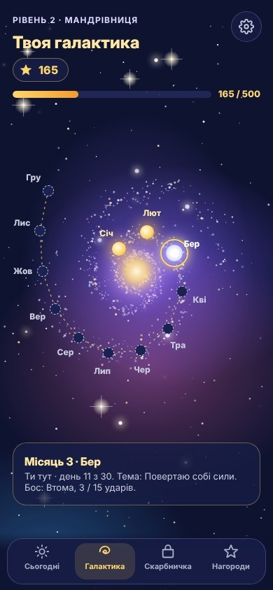

← Накопич
Новинка • на весь 2027 рік
Зоряний рік 2027
Кожен рік обіцяєш собі «цього разу візьмусь за себе», а потім втома, гроші розходяться і знову грудень? Зроби з року гру: щодня 2 хвилини — і ти рухаєшся вперед, навіть коли сил ледь вистачає.




«Дуже прикольна задумка»
— Діана, перша тестувальниця
Спробувати демо безкоштовно →
Що всередині
- Щодня 1–3 маленькі квести на 2 хвилини — під твої сили: «ледь жива», «нормально» або «повна сил»
- Три напрямки: спокій, гроші та впевненість — 540 квестів на рік
- 12 місяців — 12 зірок у твоїй галактиці і бос кожного місяця: Втома, Тривога, Імпульсні покупки…
- Рівні від «Мрійниці» до «Зіркової» і нагороди, які обираєш собі сама
- Скарбничка — бачиш, скільки відклала за рік
- Банка радості, медалі й режим «важкий день»
- Без штрафів: пропустила день — нічого не згорає
Як отримати
- Напиши «ЗІРКА» в Дірект Instagram @nakopych_challenge
- Оплати 749 грн на картку — реквізити надішлемо у відповідь
- Отримай посилання і особистий код, відкрий у телефоні та додай гру на головний екран. Далі працює навіть без інтернету
749 грн
за весь рік · це ~2 грн на день
Написати «ЗІРКА» в Дірект
Особистий код працює на одному телефоні. Змінила телефон — напиши нам, перенесемо прогрес.